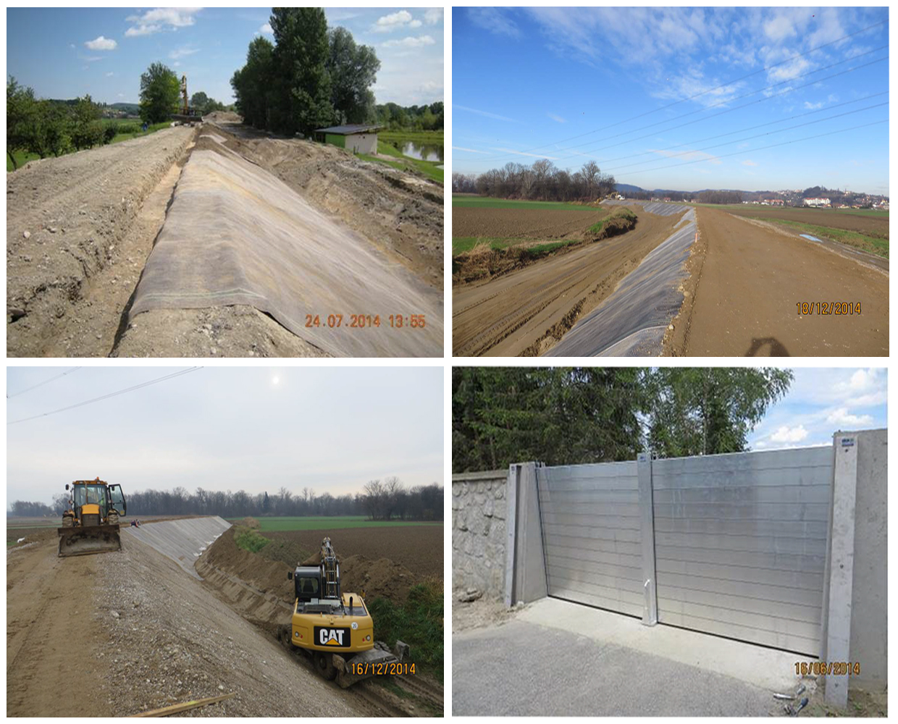
Protipoplavni nasipi v Dupleku in Dogošah
Projektna dokumentacija in projektantski nadzor za zaščito naselij, ki jih je Drava poplavila v letih 1998 in 2012.
7,4 kmnasipov100 mvisokovodnega zidu2014–2015izvedba
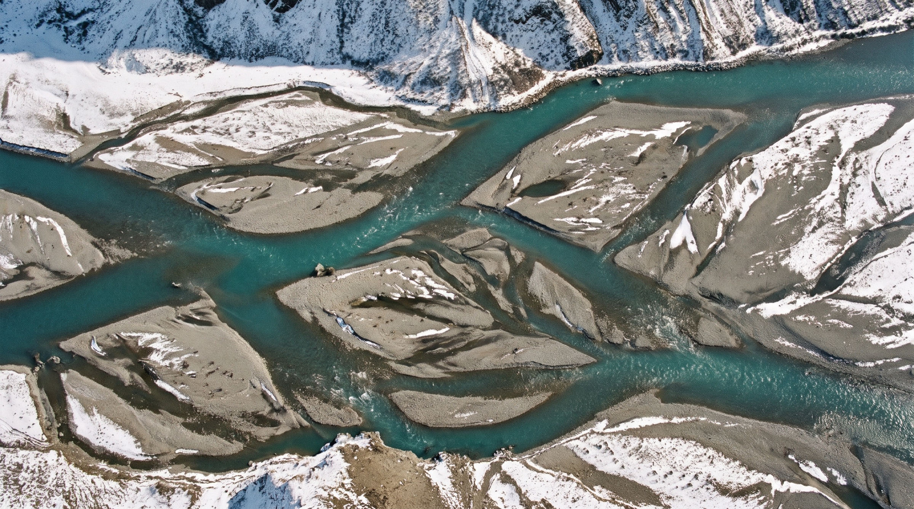
46.5578° N, 15.6455° E
Maribor, od leta 1989
Projektno dokumentacijo za vodno gospodarstvo izdelujemo od ideje in študij do izvedbenih načrtov in nadzora. Vse na enem mestu.
Pošljite povpraševanjeSmo projektivno podjetje z več kot tridesetletno tradicijo. Rešujemo naloge s področja nizkih gradenj in ekologije, od reke Drave do reke Ganges.
Leto ustanovitveSamostojno podjetje od 1990, prej projektni biro VGP Maribor.
StrokovnjakovGradbeništvo, hidrotehnika, biologija, agronomija, geodezija in komunala.
Referenčnih projektovZa ministrstva, DARS, Dravske elektrarne in slovenske občine.
Bonitetna odličnostIn sistem vodenja kakovosti po standardu ISO 9001.
Ena ekipa pokrije vse, kar potrebuje projekt ob vodi: od hidravlike in okolja do komunale in krajine.
Detajlne 1D in 2D simulacije toka visokih voda, umerjene na zabeležene gladine poplav.
Globine vode pri pretoku Q100 na Dravi med jezom Markovci in HE Formin, izdelano v okviru projekta LIVEDRAVA.
Simulacija oživitve rečnega rokava v Gajevcih. Rešitve preverimo v modelu, preden jih umestimo v prostor.
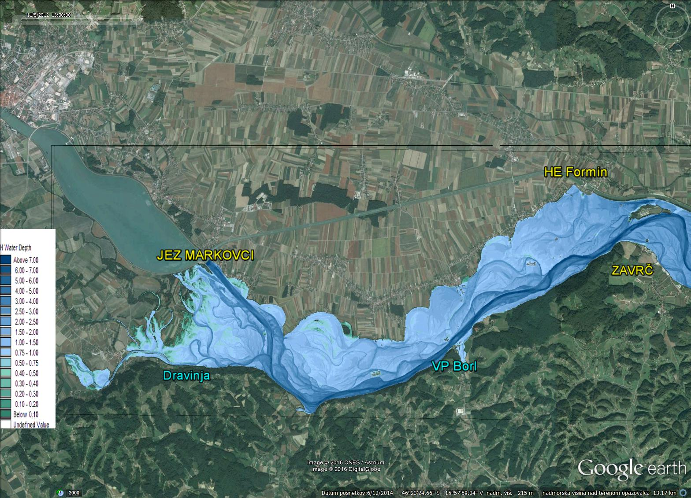
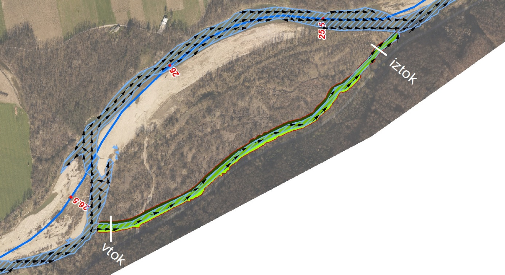
Drava · Q100 0,1 m7 mOd protipoplavnih nasipov do evropskih projektov obnove rečnih ekosistemov.

Projektna dokumentacija in projektantski nadzor za zaščito naselij, ki jih je Drava poplavila v letih 1998 in 2012.
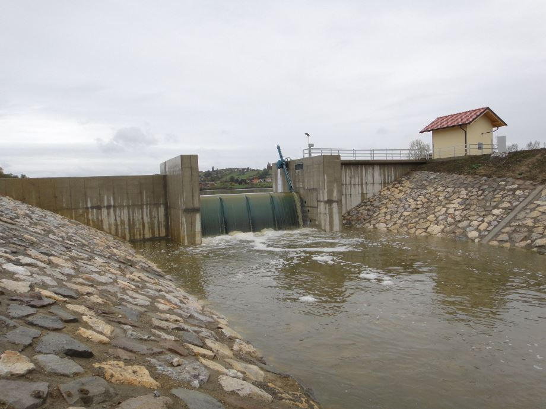
Nov prelivni objekt z gibljivo hidromehansko opremo ter nadvišan pregradni nasip za zadrževanje visokih voda Pesnice.
Evropski projekt LIFE+ med Mariborom in Središčem ob Dravi: odpiranje rečnih rokavov, poplavna študija in študija prodonosnosti.
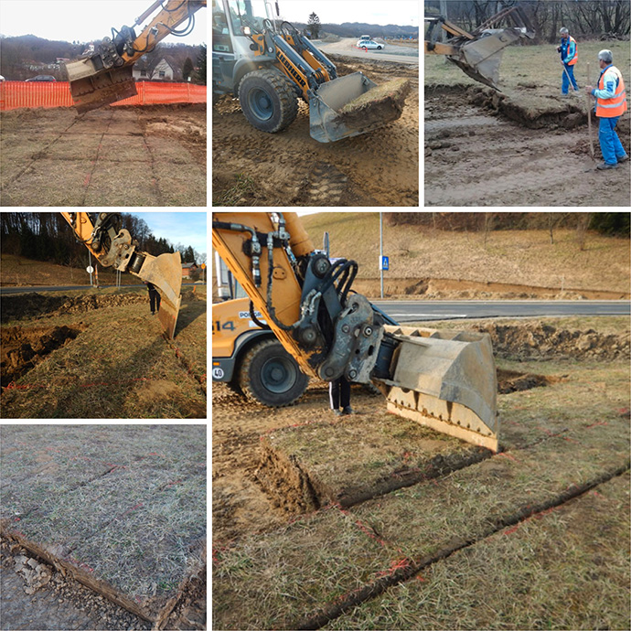
Omilitveni ukrep ob gradnji avtoceste Draženci–Gruškovje za naravno vrednoto Rogatnica. V takšnem obsegu prvič v Sloveniji.
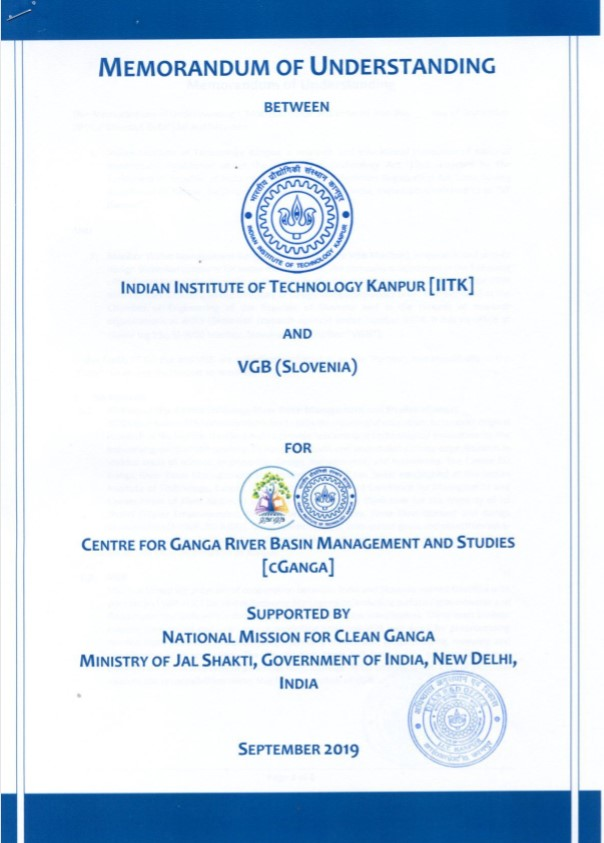
Dogovor z Indian Institute of Technology Kanpur o hidravličnem modeliranju dela reke Ganges, podpisan ob obisku indijskega predsednika.
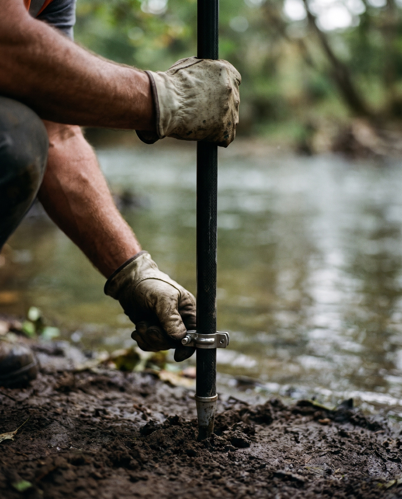
Terenski posnetki, hidrološke analize in idejno-tehnične rešitve.
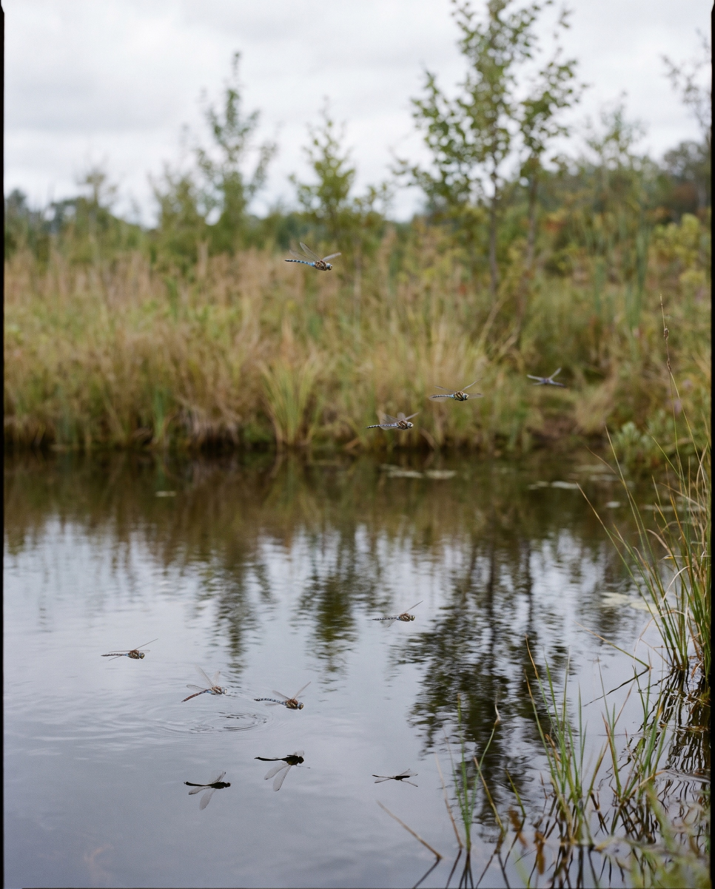
Presoje vplivov, lokacijski in ureditveni načrti, krajinske rešitve.
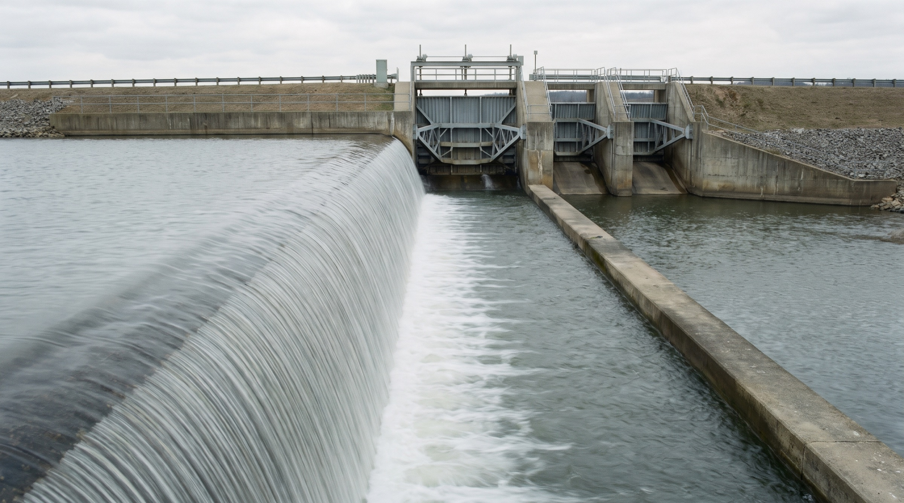
IDZ, DGD in PZI za vodne, hidrotehnične in komunalne objekte.
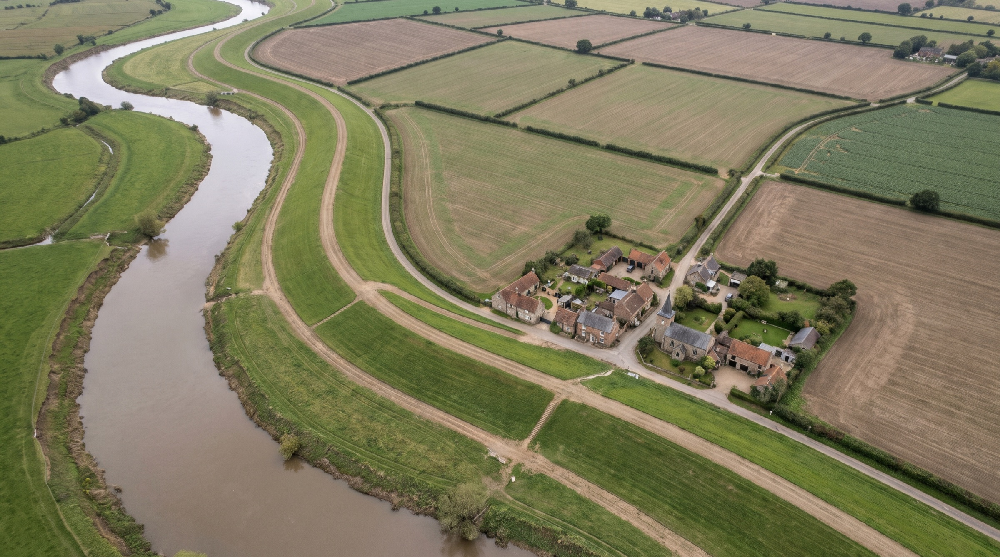
Projektantski nadzor, revizije projektov in svetovalni inženiring.
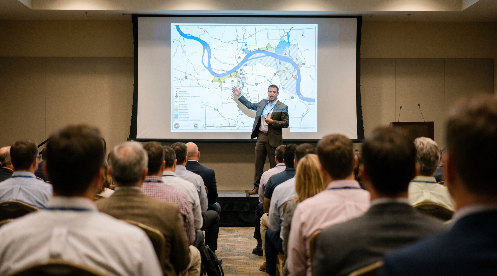
Srečanje slovenskih vodarjev, ki ga v Mariboru vsako leto decembra organiziramo skupaj z Dravo VGP Ptuj. Udeležba je brezplačna.
Država, energetika, univerze in občine po vsej Sloveniji.


Člani Inženirske zbornice Slovenije, Društva vodarjev Slovenije in Slovenskega nacionalnega komiteja za velike pregrade.
Vabimo vas k sodelovanju na 37. Mišičevem vodarskem dnevu, 9. decembra v Mariboru.
Podpora podjetjem za podaljševanje delovne aktivnosti, sofinancirana iz Evropskega socialnega sklada plus.
Sodelovanje z IIT Kanpur pri hidravličnem modeliranju reke Ganges.